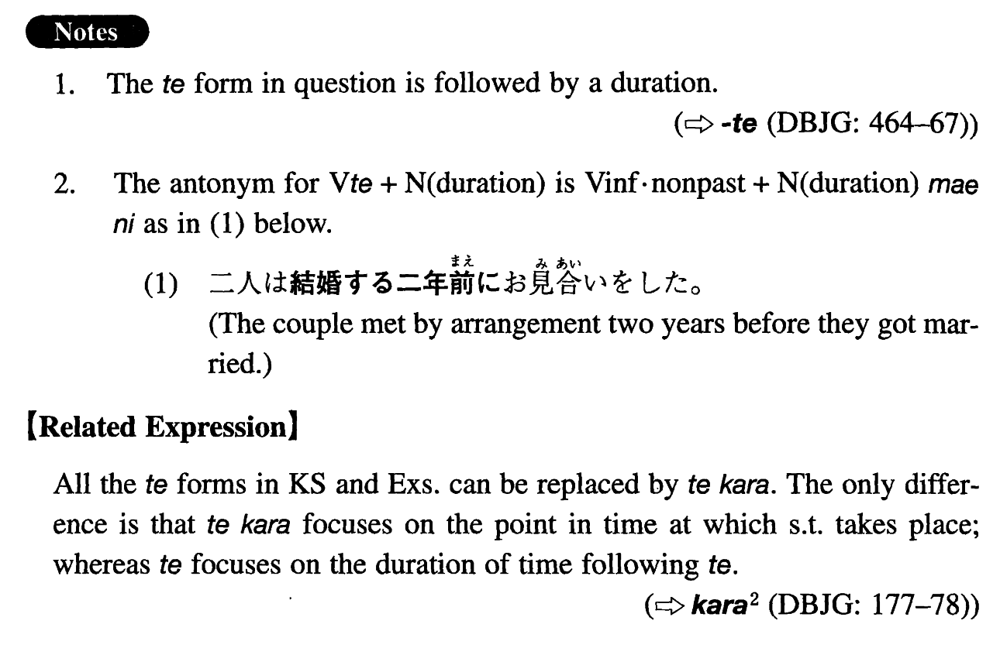

←
DoJG
→
て
(I. 455)
Example sentences
(ks).
こちらにいらっしゃっ
て
もう何年になりますか。
How long have you been here / how many years it is since you came here?
(a).
二人は結婚し
て
二年後に離婚した。
The couple got married and two years later they got divorced.
(b).
会社を辞め
て
もう久しい。
It has been a long time since I quit the company.
(c).
この島を訪れ
て
もう何年になるだろうか。
I wonder how many years have already passed since I last visited this island.
(d).
この会社で働き始め
て
これで四年になります。
It's been four years since I began to work at this company.
(e).
この町に来
て
まだ一週間目です。
It's my first week in this town.
Formation
V
て
Duration
来
て
二年
It has been two years since someone came
